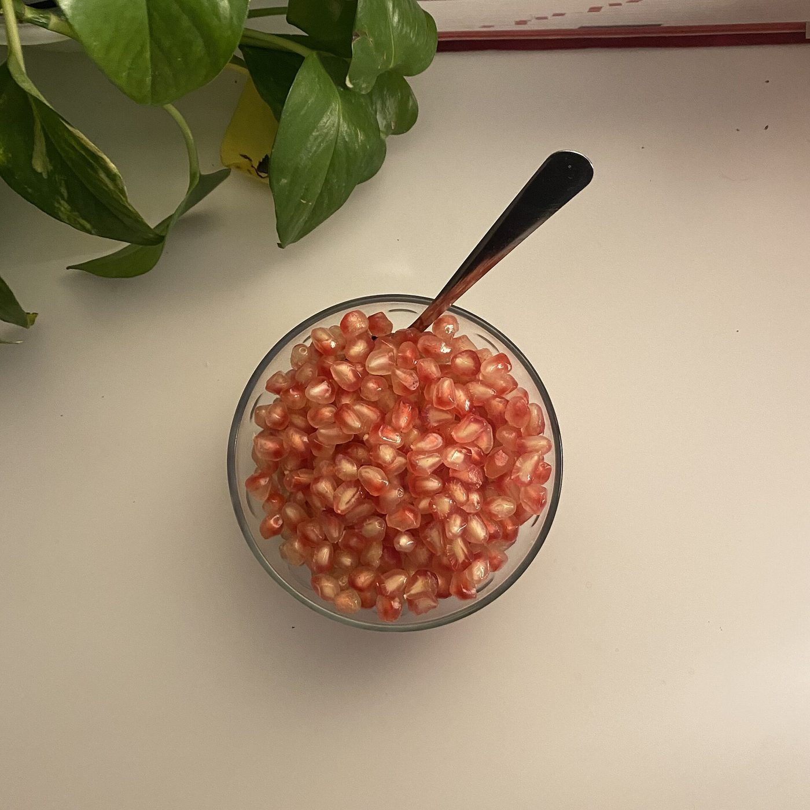

制作側の連想
鞍の部位を、配置図にしてみる
鞍の部位を図にしたもので、制作側の連想です。お店の理念・由来とは無関係で、実際の製品の仕様を示すものでもありません。 六つの部位に番号をふり、上の図と並べています。
凡例
六つの部位
- 1鞍頭(ポメル)鞍の前の端にある、盛り上がった部分。前方の目印になる形をしている。
- 2座面(シート)人が腰を下ろす、鞍の中央のくぼんだ部分。革で張られた形が多い。
- 3鞍尾(カントル)座面の後ろ側で、少し立ち上がっている部分。
- 4鐙革(あぶみ革)鞍の左右から垂れ下がる革のひもで、穴を使って長さを調整する。
- 5鐙(あぶみ)鐙革の先に付く、足をのせるための金具の輪。底には踏み板がある。
- 6腹帯(ガース)鞍を下から回して留めるための、幅のあるベルトの部分。
写真(イメージ)
写真(イメージ)





写真はイメージです。お店のものではありません。
ご案内
お店のこと(確認できたものだけ)
| 所在地 | 〒285-0023 千葉県佐倉市新町１０４−２ |
|---|---|
| 電話 | 準備中 |
| 営業時間 | 準備中 |
| 定休日 | 準備中 |
| ご予約 | 準備中 |
| 駐車場 | 準備中 |
| SNS | Instagram @boulangerie_sept |